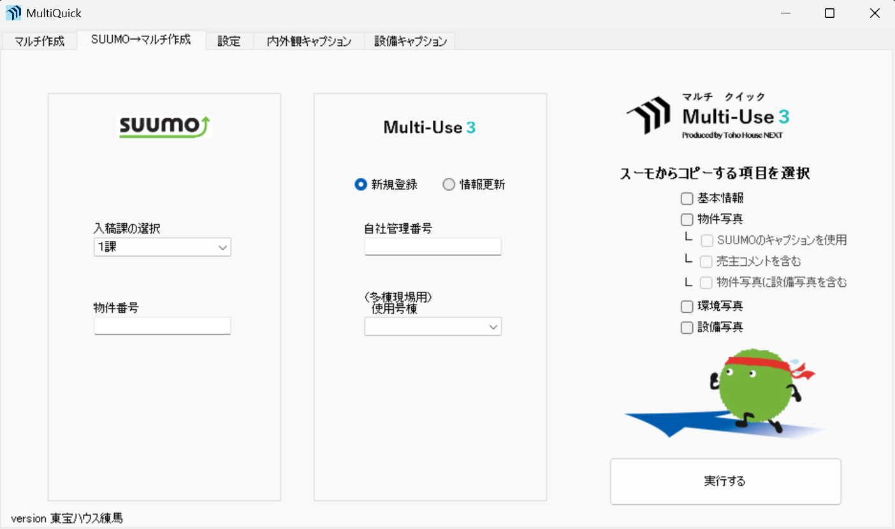
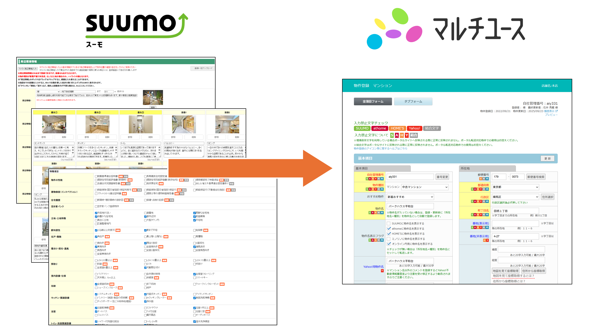
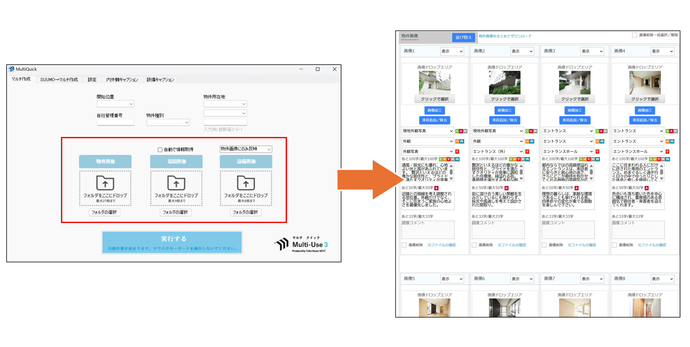
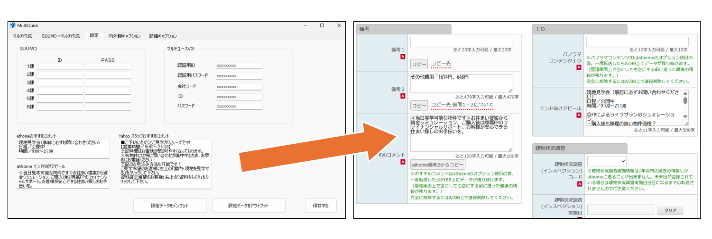

MultiQuick (マルチクイック)

導入効果
⏱️ 作業時間：1件あたり約30分の削減に成功
🔗 連携効率：各ポータルサイトへの連動入稿がスムーズに
🏢 利用規模：グループ12社以上の店舗で標準採用
開発の背景・概要
物件情報を各ポータルサイトへ振り分ける「マルチユースV3」の操作は、多機能ゆえに工程が多く、1件の登録に多大な時間を要していました。
MultiQuickは、このマルチユースの入稿フローを徹底的に研究し、自動化できる工程をすべてシステム化したツールです。
SUUMOに登録した情報をマルチユースへ逆輸入する機能と、マルチユースに情報を新規登録する機能がメイン機能となります。
2019年の開発以来、練馬、船橋、品川、横浜など多くの店舗で、日々の入稿業務を支える基幹ツールとして活用されています。
主な機能
SUUMOからマルチユースへの自動入力
SUUMOに入稿した物件の基本情報、詳細項目、写真データ等を、マルチユースの入力フォームへ高速かつ正確に自動流し込みを行います。手入力によるミスを根絶し、作業負荷を大幅に軽減します。

マルチユースへの新規物件入力
登録する物件写真のファイル名から、適切なカテゴリーや各サイト用の種別タグを自動で判別し、一括設定します。紹介文も登録済みのリストからランダムに自動挿入されるため、煩雑な写真設定の手間を最小限に抑えられます。

共通項目・PR情報の自動挿入
「購入サポート」や「店舗PR」など、サイトごとに繰り返し入力が必要な定型情報をワンクリックで自動セット。情報の登録漏れを防ぎ、広告の完成度を高めます。
